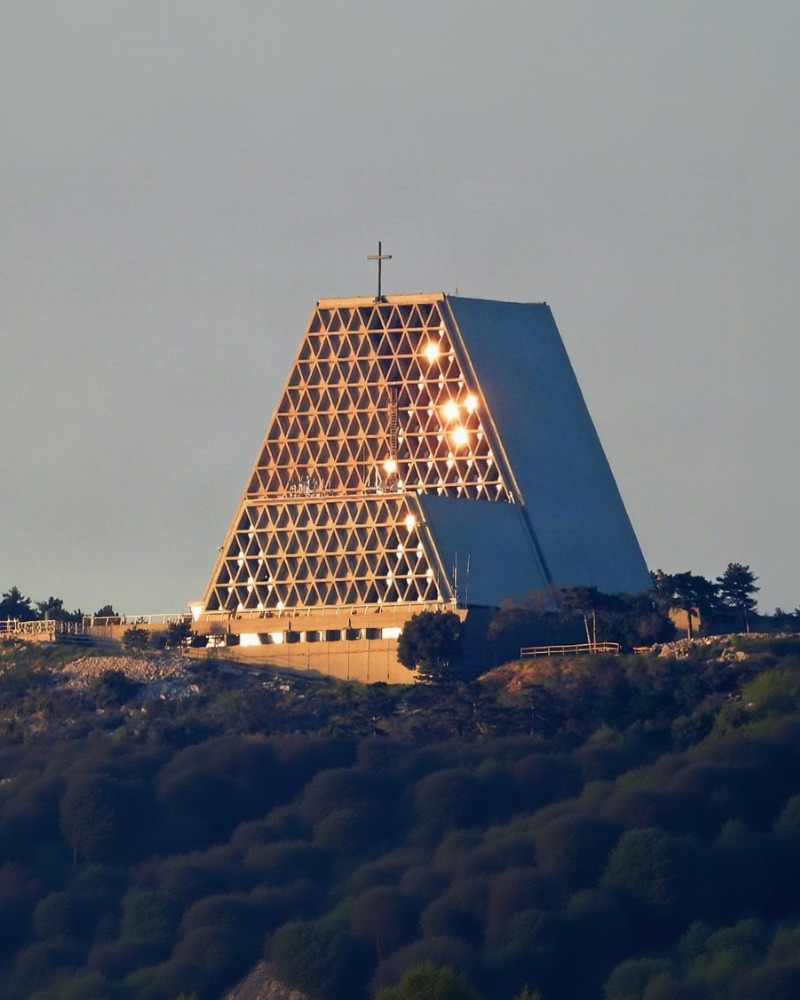

Castello di Miramare
1a tappa · il castello sul mare
Un castello bianco su una scogliera sopra l’Adriatico, con un parco verde in riva al mare.
Scopri di più →
Una giornata indimenticabile: un tour intimo in minivan in piccolo gruppo, al massimo 8 ospiti, tra un castello sul mare, un villaggio di pescatori e le colline del Carso.
Prenota il tuo postoVedi la giornataTrieste non alza la voce (la Bora a volte sì). Aspetta in fondo all’Italia, dove il Carso cade nell’Adriatico, e premia chi rallenta: un castello bianco contro l’acqua, un accogliente villaggio di pescatori che ti coccola, colline che sovrastano il golfo.
Ti accompagniamo noi, con calma, in un piccolo gruppo, così puoi semplicemente guardare. Lascia a noi l’auto, la mappa e la fretta.

Trieste è un gioiello panoramico. Vista dall’alto, tutta la città e il golfo si aprono in un colpo solo: tetti, navi che scivolano come pensieri lenti, l’Adriatico che brilla nella luce della sera.
Lungo la strada ci fermiamo in vari punti panoramici, scelti per la luce, per ammirare il golfo dai posti migliori della città.
Il nostro obiettivo sono i panorami migliori. Ci incontriamo 8 ore prima del tramonto, così la giornata finisce con la luce più bella possibile.
Un castello bianco su una scogliera sopra l’Adriatico, con un parco verde in riva al mare.
Scopri di più →
Una cittadina di mare in stile veneziano dall’altra parte della baia, storica e panoramica.
Scopri di più →
Una collina alta sul golfo, con una vista immensa per il tramonto.
Scopri di più →



Incluso: trasporto, guida, spuntino, tutte le tappe. Non incluso: pranzo e biglietti facoltativi.
Sì. L’ultima tappa al Castello di Socerb è prevista al tramonto. Il tour si svolge anche con la pioggia, se è fattibile in sicurezza. Le nuvole possono coprire il tramonto, ma il panorama sul golfo merita anche se piove. Scegli una data in homepage per vedere l’orario esatto.
Trasporto in minivan, una guida triestina, uno spuntino locale e tutte le tappe. Pranzo e biglietti facoltativi (ad esempio l’interno del castello di Miramare) non sono inclusi.
Durante il tour puoi fare due chiacchiere con la tua guida. È madrelingua italiana, parla inglese fluente e se la cava con semplici conversazioni in tedesco.
Invia una richiesta dalla pagina contatti o su WhatsApp. Riceverai un link di pagamento sicuro e i tuoi posti sono confermati a pagamento avvenuto.
Sì, con rimborso completo fino a 48 ore prima del tour. Se siamo noi ad annullare per maltempo o motivi di sicurezza, ricevi il rimborso o una nuova data gratuita.
Il Castello di Socerb si trova subito oltre il confine, in Slovenia. Porta una carta d’identità o il passaporto.
In Piazza Unità d'Italia, a Trieste. Ti riportiamo nello stesso posto.
Solo 8 ospiti per partenza, €109 a persona. Dicci quando vorresti venire e organizzeremo tutto su WhatsApp o via email.
Chiedi del tour